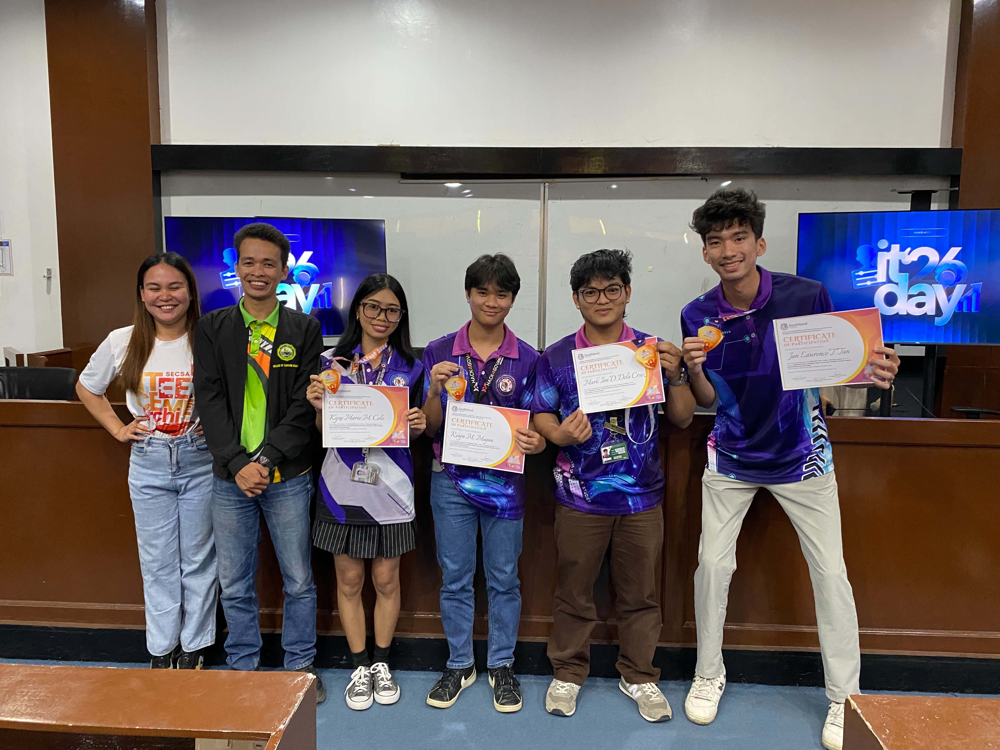

BSIT Graduate — Open to Opportunities
A detail-oriented BSIT graduate specializing in web design and problem-solving — turning real-world challenges into clean, functional digital solutions.
Projects & Achievements
Awarded 1st place at the Web Design Competition held at Southland College on March 4, 2026. Designed and built a complete, polished web layout using HTML & CSS under competition conditions — standing out to judges through clean structure, visual hierarchy, and attention to design detail.

A full-featured management system designed to solve real operational challenges faced by the Calubang Farmers Cluster Association. As Lead Developer & UI Designer, I built the system's core management features — covering member records, association data, and reporting workflows — while ensuring the interface remained intuitive for non-technical users. Delivered with complete user guides and documentation for the final defense.
Capabilities
I combine technical web skills with strong analytical thinking — writing clean, structured HTML & CSS while approaching every problem with care and precision. I learn fast, adapt quickly, and take pride in doing things right the first time.
About Me
I'm a highly motivated BSIT graduate eager to bridge the gap between academic knowledge and real-world tech challenges. I thrive in environments where attention to detail matters — whether I'm writing structured code, designing an interface, or working through a complex problem.
I consider myself an open-minded, fast learner who embraces new tools and perspectives quickly. Analytical thinking isn't just something I do professionally — it's how I approach everything. I genuinely enjoy breaking down complicated systems and finding clean, efficient solutions.
One small detail that says a lot: I have exceptionally fast and accurate typing skills — a reflection of my overall efficiency and precision. I'm ready to bring that same energy to a team that values craft and purpose.
Get In Touch
Open to roles & any opportunities